%%{init: {'flowchart': {'nodeSpacing': 26, 'rankSpacing': 40, 'padding': 16}, 'themeVariables': {'fontSize': '24px'}}}%%
flowchart LR
RS["rsample<br/>split<br/>train / test"] --> RC["recipes<br/>preprocess"]
RC --> PS["parsnip<br/>model spec"]
PS --> WF["workflows<br/>recipe<br/>+ model"]
WF --> YS["yardstick<br/>score:<br/>ROC + PR AUC"]
Practical Artificial Intelligence for Medical Data Analyses with R


Basic — Build and validate a clinical ML model in R, reproducibly
The hands-on companion to Machine Learning — An Applied Overview
PhD course in Translational Specialistic Medicine “G.B. Morgagni” · University of Padova
Corrado Lanera | Unit of Biostatistics, Epidemiology & Public Health
Find me at…

Corrado Lanera
unipd-ubep.it — UBEP, University of Padova
@CorradoLanera — GitHub · Telegram
@UBESP-DCTV — group on GitHub
calendly.com/corradolanera — book a slot
Credits & acknowledgements
This hands-on workshop is the practical companion to the Machine Learning — An Applied Overview lecture.
- Built on the UBEP teaching tradition — colleagues whose examples and feedback shaped earlier editions of the practical courses.
- Dataset: Heart-failure clinical records (Chicco & Jurman, 2020) — a real, open clinical cohort.
- Tooling: the tidymodels stack (Kuhn, Silge et al.) on R, authored in Quarto.
- Illustrations: Allison Horst (CC BY 4.0) and the UBEP ECDC R course (2023); additional figures generated with Images2.0 in a friendly hand-painted style (style anchor + prompts in
slides/workshops/_assets/horststyle-prompts.md). - Course design & materials (this edition): Corrado Lanera, built with Claude (Anthropic) via Claude Code.
Build and validate a clinical ML model in R
Over the next ~4 hours we do one thing well: take a real clinical cohort (heart-failure clinical records, 299 patients), and build, tune, and validate a model that predicts in-hospital death — ending with a reproducible report a colleague can re-run.
- The spine is tidymodels:
rsample\(\to\)recipes\(\to\)parsnip\(\to\)workflows\(\to\)yardstick. - One outcome, four model families, one fair test-set evaluation.
- Modular & incremental. Six short steps; each
steps/NN/folder is a complete snapshot, and the solution of one step is the start of the next — fall behind, copy the next folder, and you are back in sync. - Everything live-coded, everything reproducible (
renv+here+set.seed).
The clinical question, and the cohort
The question. After a heart-failure episode, can routine baseline variables predict in-hospital death during follow-up?
The cohort. Heart-failure clinical records — 299 patients, 105 deaths (~32%), collected in 2015 (Faisalabad, Pakistan).
- One row per patient; 13 columns = 12 clinical fields + the outcome
DEATH_EVENT. - A real, open dataset — small enough to live-code, real enough to mislead you if you are careless (we will meet exactly one such trap: leakage).
Where to get it (free).
- UCI ML Repository — Heart failure clinical records (2020).
- Kaggle — Heart Failure Prediction (same data).
- Citation: Chicco & Jurman (2020), BMC Med. Inform. Decis. Mak.
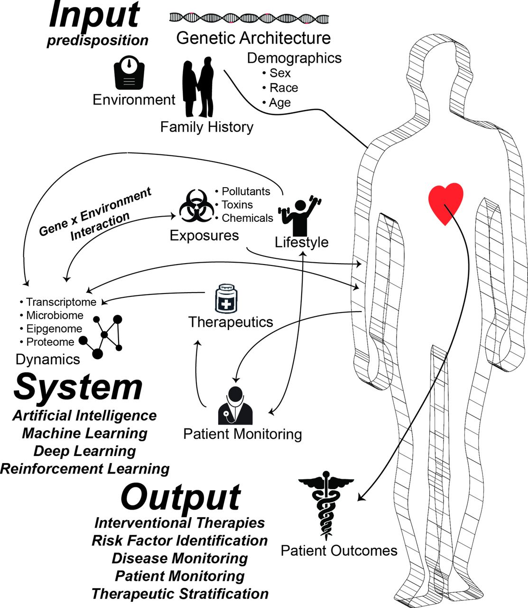
The variables — 11 predictors, one outcome
Outcome — outcome: died / survived (we make died the first level, so every metric scores death as the positive class).
Predictors (11), grouped:
- Demographics —
age,sex. - Comorbidities —
anaemia,diabetes,high_blood_pressure,smoking. - Labs & cardiac function —
ejection_fraction(pump efficiency),serum_creatinine,serum_sodium,creatinine_phosphokinase,platelets.
Dropped on purpose — time (follow-up days): it leaks the outcome (longer follow-up is mechanically tied to who survives). Keeping it would inflate every score and fail in the clinic.
Step 00 · Setup
Objective. Start from a healthy, reproducible project.
- Open the
.Rproj; letrenv::restore()rebuild the pinned library. - Load data through
here::here()(stable paths) andrio::import().
A reproducible project — renv, here, rio
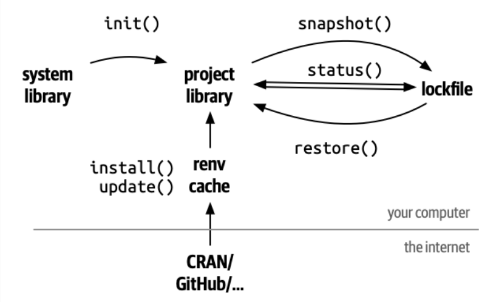
UBEP ECDC R course (2023)
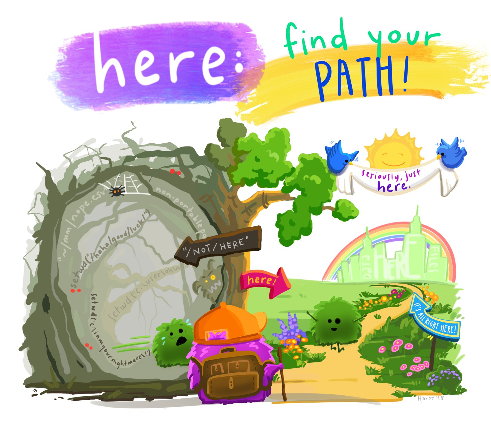
Artwork by Allison Horst (CC BY 4.0)
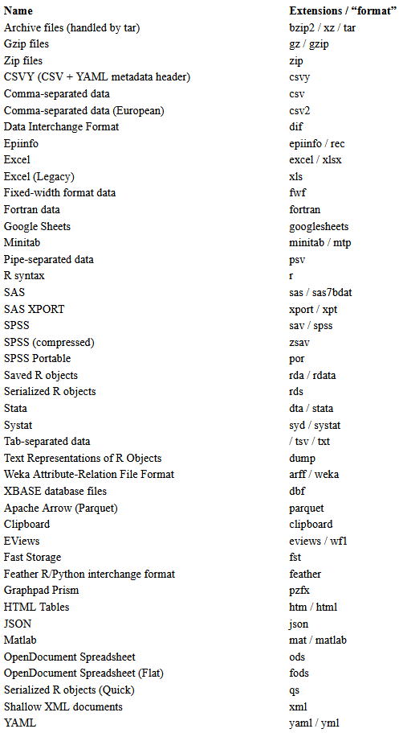
UBEP ECDC R course (2023)
renvpins every package version:renv::restore()rebuilds the exact library on any machine,renv::snapshot()records what you used. No more “works on my laptop”.herebuilds paths from the project root, not your working directory — sohere::here("data-raw", "x.csv")works for everyone. Neversetwd().riois one verb for many formats:rio::import()reads.csv,.xlsx,.rds… — it picks the right reader from the file extension.
Step 01 · Import & wrangle
Objectives. Meet the tidyverse and shape the data.
- A tidyverse primer: the native pipe
|>, verbs that return a new tibble. - Clean and recode with
dplyr/tidyr;janitor::clean_names(). - Drop the leaky
timecolumn (follow-up days mechanically anticipate the outcome). - Make the outcome a factor with the event first (
died) — so every metric scores death as positive by default.
The tidyverse — one grammar for data
A family of packages that share one design: a tidy tibble goes in, a tidy tibble comes out.
- A tibble is a data frame that prints cleanly and never surprises you (no silent type coercions, no row names).
- Every verb returns a new tibble — it does not edit in place. You build a result by chaining verbs, then assign once with
<-. - One consistent style across
dplyr,tidyr,ggplot2, … — learn the grammar once, reuse it everywhere.
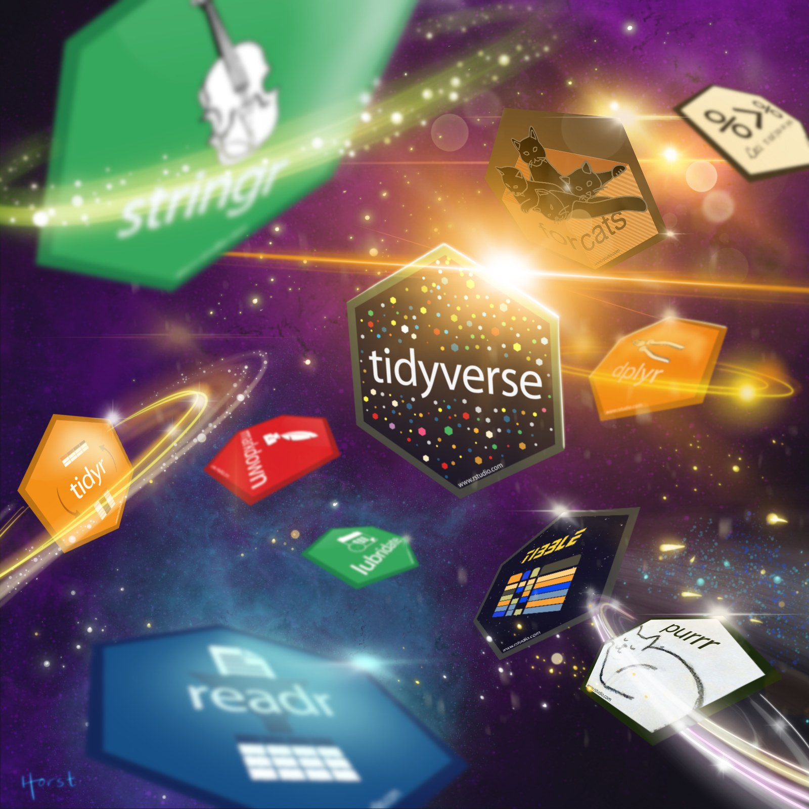
Artwork by Allison Horst (CC BY 4.0)
The native pipe |>
The pipe sends the value on its left into the first argument of the function on its right. It turns inside-out nesting into a left-to-right recipe.
x |> f() |> g() is g(f(x)) — but you read it in the order it happens.
Read it aloud: take the raw data, then clean the names, then drop time, then look. No temporary variables, no nested parentheses.
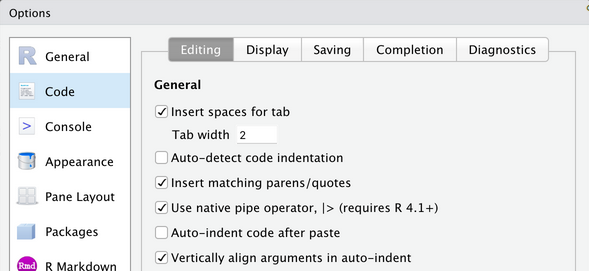
UBEP ECDC R course (2023)
Reshaping with verbs — dplyr, janitor, forcats
A handful of verbs do almost all of wrangling:
select()— keep / drop columns (e.g.select(-time)).mutate()— add or change columns (e.g. buildoutcome).filter()— keep rows by a condition.across()— apply one transform to many columns at once.janitor::clean_names()— tidy, snake_case, machine-safe column names.factor()/forcats— turn text into a factor with explicit levels; we setdiedfirst so it is the positive class everywhere.
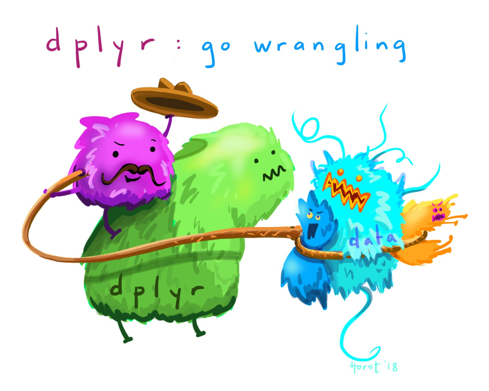
Artwork by Allison Horst (CC BY 4.0)
Tidy data — and the leakage trap
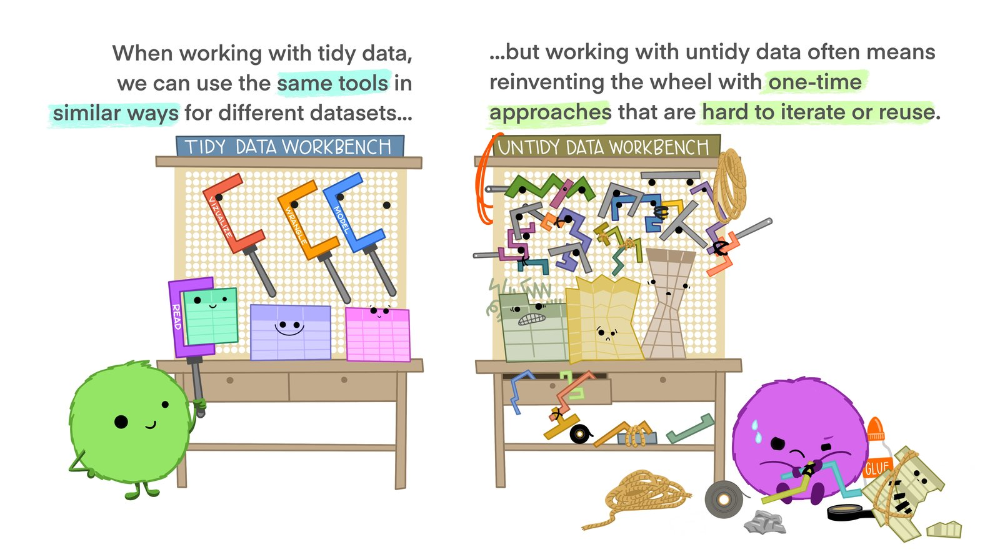
Tidy data art: Lowndes & Horst, Openscapes (CC BY 4.0)
Tidy data: each variable is a column, each observation a row, each cell one value. Tidy in \(\to\) everything downstream just works.
Leakage: a predictor that secretly encodes the outcome. Here time (follow-up days) is mechanically longer for survivors — a model that uses it “predicts” death by cheating, scores beautifully in the slides, and fails in the clinic.
- The fix is one line —
select(-time)— but spotting leakage is a clinical-judgement skill, not a coding one. Always ask: could this column only be known after the outcome?
Step 02 · Clinical EDA
Objectives. Describe the cohort and read its shape.
gtsummary::tbl_summary(by = outcome)— a clinical Table 1.- One
ggplotof a predictor against the outcome. - Read the class imbalance (~32% events) \(\to\) it drives the dual-metric choice (AUC-ROC and AUC-PR) later.
gtsummary — a clinical Table 1
tbl_summary(by = outcome) builds the publication-style “Table 1” clinicians already read: one row per variable, one column per outcome group, with sensible summaries chosen automatically (median [IQR] for numbers, n (%) for categories).
- It is descriptive, not a test — it shows where the groups differ, which is how you build intuition before any model.
- Reading it here, you already see the imbalance (~32% deaths) that will steer the metric choice.
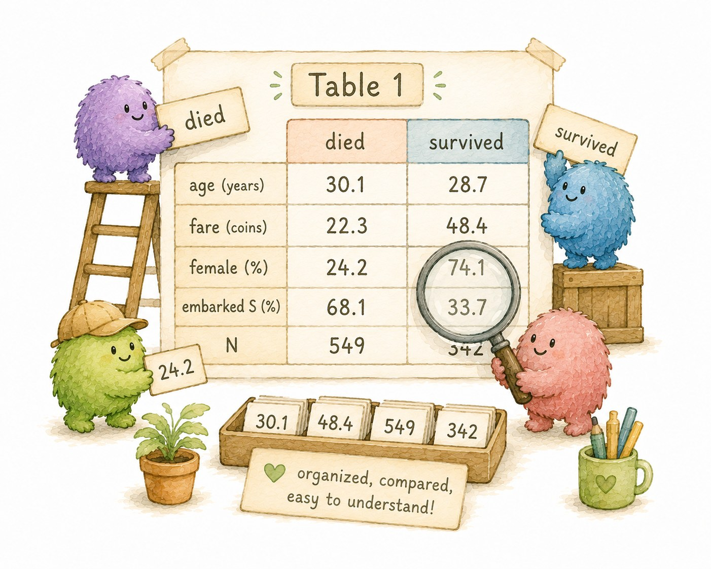
Illustration generated with Images2.0 (illustrative figures, not our cohort)
ggplot2 — the grammar of graphics
A plot is built in layers, added with +:
- data piped in, then
aes()maps variables to position / colour / fill… - geoms (
geom_boxplot,geom_point, …) draw the data. - add
+ theme_*(),+ labs()to refine. The same grammar builds every chart.
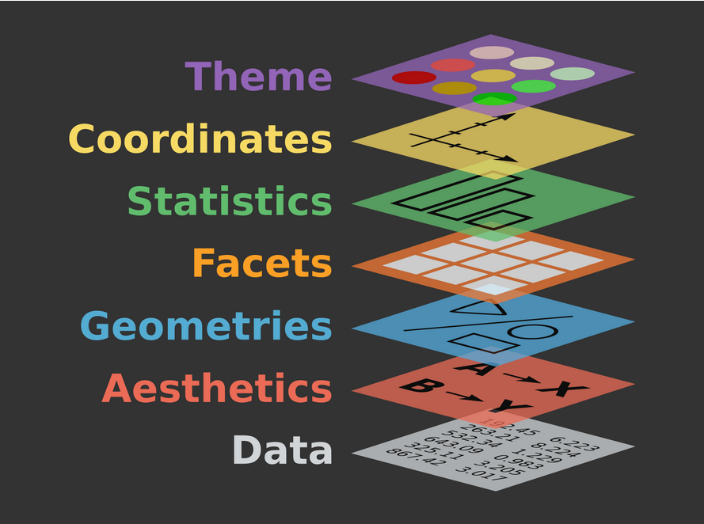
UBEP ECDC R course (2023)
Where today’s model fits — learning paradigms
Today we do supervised learning: every patient carries a known label (died / survived) and the model learns the mapping from features to label.
- Supervised — labelled outcome; classification (our case) or regression. ← today
- Unsupervised — no labels; find structure (clustering, PCA). You met it in the Overview; out of scope here so we can do one supervised pipeline thoroughly.
- Reinforcement — an agent learns from rewards by acting, not from a table of labels (think treatment policies that improve with feedback).
- Active / online — the model asks for the most useful next label, or keeps learning as data streams in.
One labelled table, one clear target: that is why supervised methods fit this problem.
Step 03 · Logistic spine
Objectives. Lay the tidymodels spine with a glm baseline.
- Walk the object-map
rsample\(\to\)recipes\(\to\)parsnip\(\to\)workflows\(\to\)yardstick. - Fit a plain
glmbaseline and score it withyardstick— AUC-ROC and AUC-PR.
tidymodels — one spine, five packages
tidymodels is the tidyverse for modelling: the same five-package spine fits any algorithm. Learn it once on a logistic regression; reuse it for the whole zoo.
- You declare what you want (a model spec), not how each engine wants its inputs.
- Swapping algorithm = changing one line (the
parsnipspec). Everything else holds. - Because the recipe and model travel together in a workflow, preprocessing can never leak from test into train.
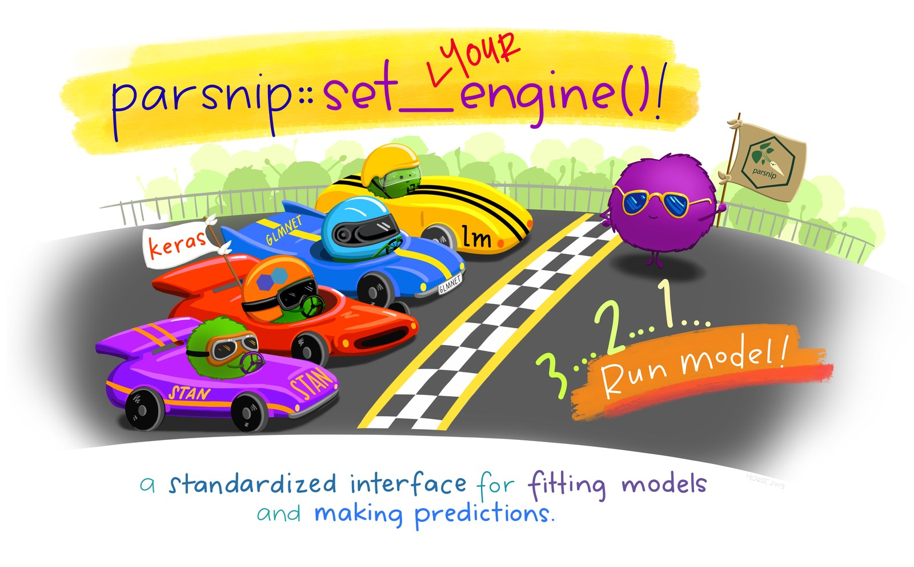
parsnip set_engine() — Artwork by Allison Horst (CC BY 4.0)
The tidymodels object-map
One spine, reused all afternoon. Five objects, one chain:
rsample—initial_split()/vfold_cv(): who trains, who tests.recipes— dummy-code, drop zero-variance, normalize.parsnip— declare the model once, engine-agnostic.workflows— bundle recipe + spec so nothing leaks.yardstick—roc_auc(),pr_auc(): two complementary scorers.
The five packages — and the functions we use
| package | role | the calls you will type |
|---|---|---|
rsample |
split & resample | initial_split(), training(), testing(), vfold_cv() |
recipes |
preprocess | recipe(), step_dummy(), step_zv(), step_normalize() |
parsnip |
model spec | logistic_reg(), set_engine(), set_mode() |
workflows |
bundle | workflow(), add_recipe(), add_model(), fit() |
yardstick |
score | metric_set(), roc_auc(), pr_auc(), augment() |
The same five every time. Step 04 changes only the parsnip line — four times — and wraps the tuning around it.
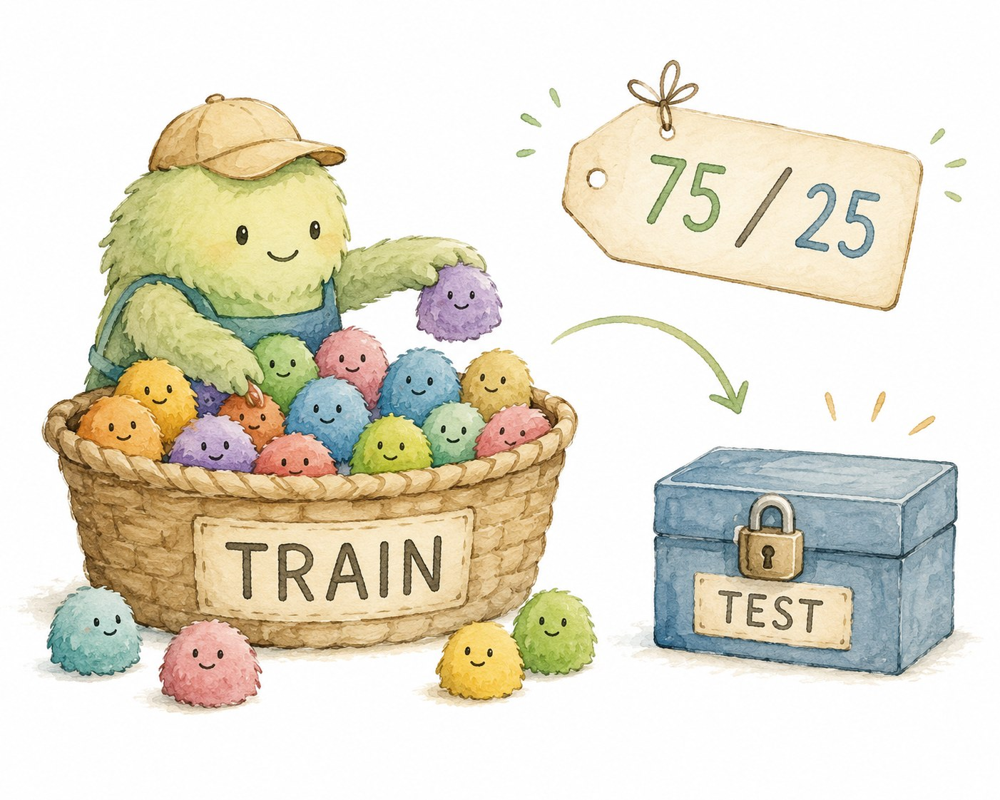
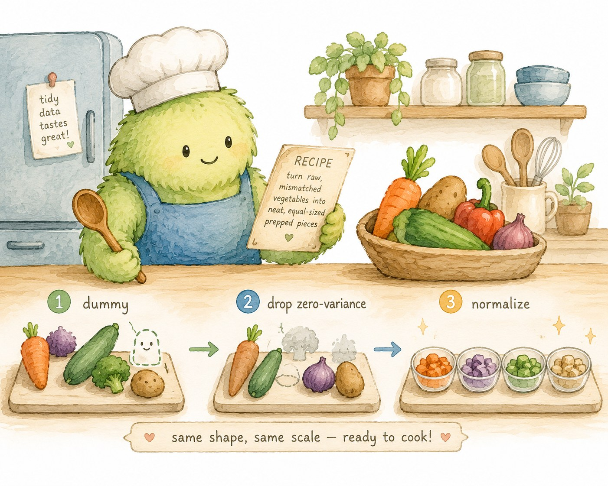
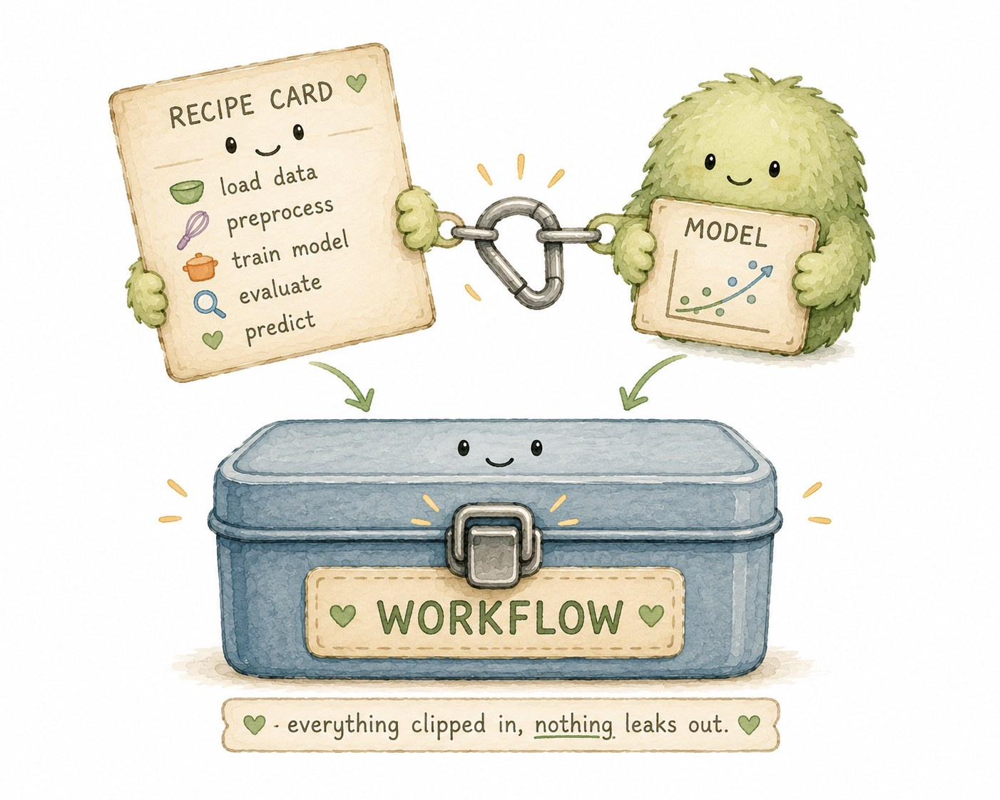
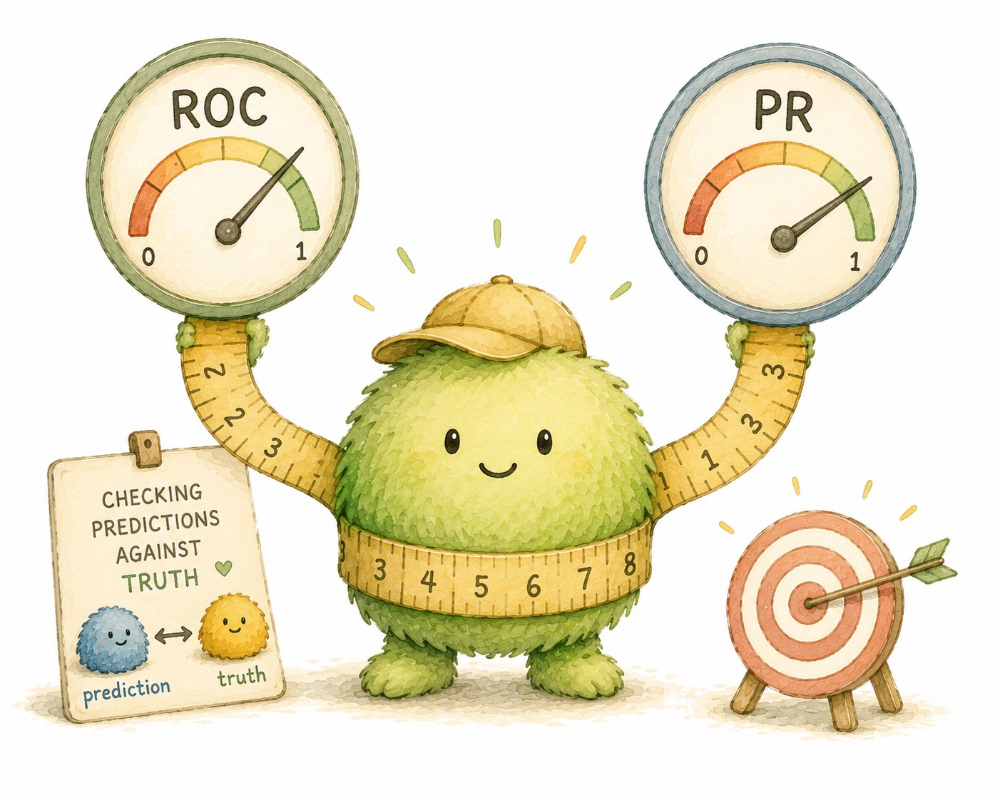
rsample · recipes · workflows · yardstick — illustrations generated with Images2.0
Hyperparameters, one algorithm at a time
A hyperparameter is a setting you fix before fitting — unlike the ordinary parameters (coefficients, split points) that the fit learns from the data. Same spine, one hyperparameter at a time: what it is \(\to\) what it controls \(\to\) its effect on bias / variance / overfitting.
Penalized logistic — penalty / mixture
The glm baseline, regularized: shrink coefficients to trade a little bias for much less variance.
| hyperparameter | what it means | effect |
|---|---|---|
penalty (\(\lambda\)) |
strength of shrinkage toward 0 | \(\uparrow\) penalty \(\to\) more bias, less variance (guards overfit); too high \(\to\) underfit |
mixture (\(\alpha\)) |
ridge \(\leftrightarrow\) lasso dial | 0 = ridge (shrink all); 1 = lasso (some coefs \(\to\) exactly 0, selects); in between = elastic-net |
- Engine
glmnet; both left astune()in theworkflow_set.
\(k\)-NN — neighbors
Predict from the \(k\) closest patients. The single hyperparameter neighbors is the bias–variance dial.
neighbors (\(k\)) |
behaviour | bias / variance |
|---|---|---|
| small \(k\) (e.g. 1–3) | follows local noise, jagged boundary | low bias, high variance (overfits) |
| large \(k\) | averages over many neighbours, smooth boundary | high bias, low variance (can underfit) |
- Range. \(k\) runs from \(1\) to \(n_{\text{train}}\): at \(k = 1\) it memorizes, at \(k \to n\) it just predicts the majority class. The good value is interior, so we tune it.
- Engine
kknn;neighborsleft astune().
SVM (RBF) — cost / rbf_sigma
Separate the classes with a margin; the RBF kernel lets the boundary curve.
| hyperparameter | what it means | effect |
|---|---|---|
cost (\(C\)) |
penalty for margin violations | \(\uparrow\) cost \(\to\) harder margin, fits training tighter \(\to\) lower bias, higher variance |
rbf_sigma (\(\sigma\)) |
how fast a patient’s influence fades with distance | see below |
rbf_sigma, in words. The RBF kernel rates two patients by a similarity that fades with distance; \(\sigma\) sets how fast it fades. Small \(\sigma\) \(\to\) influence reaches far \(\to\) a smooth, almost-linear boundary (more bias). Large \(\sigma\) \(\to\) influence is very local \(\to\) the boundary wiggles around individual points (more variance, overfit risk).
- Engine
kernlab;costandrbf_sigmaaretune()d together (they interact).
Random forest — mtry / min_n / trees
Many decorrelated trees, averaged. Two hyperparameters we tune — and one quantity we just set large enough.
| setting | what it means | effect |
|---|---|---|
mtry |
predictors offered at each split | small mtry \(\to\) trees more decorrelated \(\to\) lower variance; large \(\to\) trees agree more |
min_n |
minimum samples in a leaf | large min_n \(\to\) shallower, simpler trees (more bias, less variance) |
trees |
number of trees | a convergence quantity, not a tuning dial — see below |
trees is not a hyperparameter to tune. More trees never overfit; they only shrink Monte-Carlo noise until the averaged prediction converges. Cost grows linearly with trees, so the only task is to set it large enough to have converged — bigger than that is wasted compute, not better accuracy. A converged-but-oversized forest needs no refit at a smaller value (the answer won’t change); you’d revisit trees only if the problem itself changes. So we tune mtry / min_n and merely fix trees large.
- Engine
ranger;mtryandmin_naretune()d,treesis set (not tuned).
Step 04 · The model zoo, tuned & validated
The zoo = the four model families (penalized logistic, \(k\)-NN, RBF-SVM, random forest) brought together to compete — fairly, once.
- Bundle the four specs into one
workflow_set; tune all withworkflow_map("tune_grid"). - Tune over one shared
vfold_cv(v = 5);rank_results()/autoplot()to compare. finalizethe winner;last_fit()once on the untouched test set.
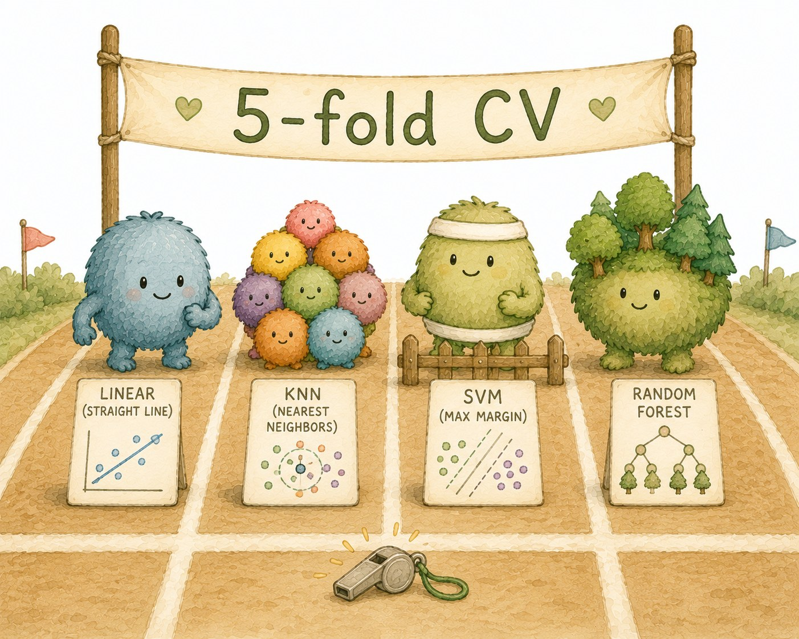
The four families racing on one shared 5-fold CV — illustration generated with Images2.0Tuning machinery — workflow_set, tune_grid, CV
vfold_cv(v = 5)splits train into 5 folds; each model is scored on each held-out fold and averaged — an honest estimate that never touches the test set.workflow_set()bundles {one recipe} × {four specs} into four workflows at once.workflow_map("tune_grid", grid = 8)tries 8 hyperparameter combos per model over the folds, scoring both metrics.rank_results()/autoplot()compare;select_best()+finalize_workflow()lock the winner’s settings;last_fit()trains on all of train and scores once on test.
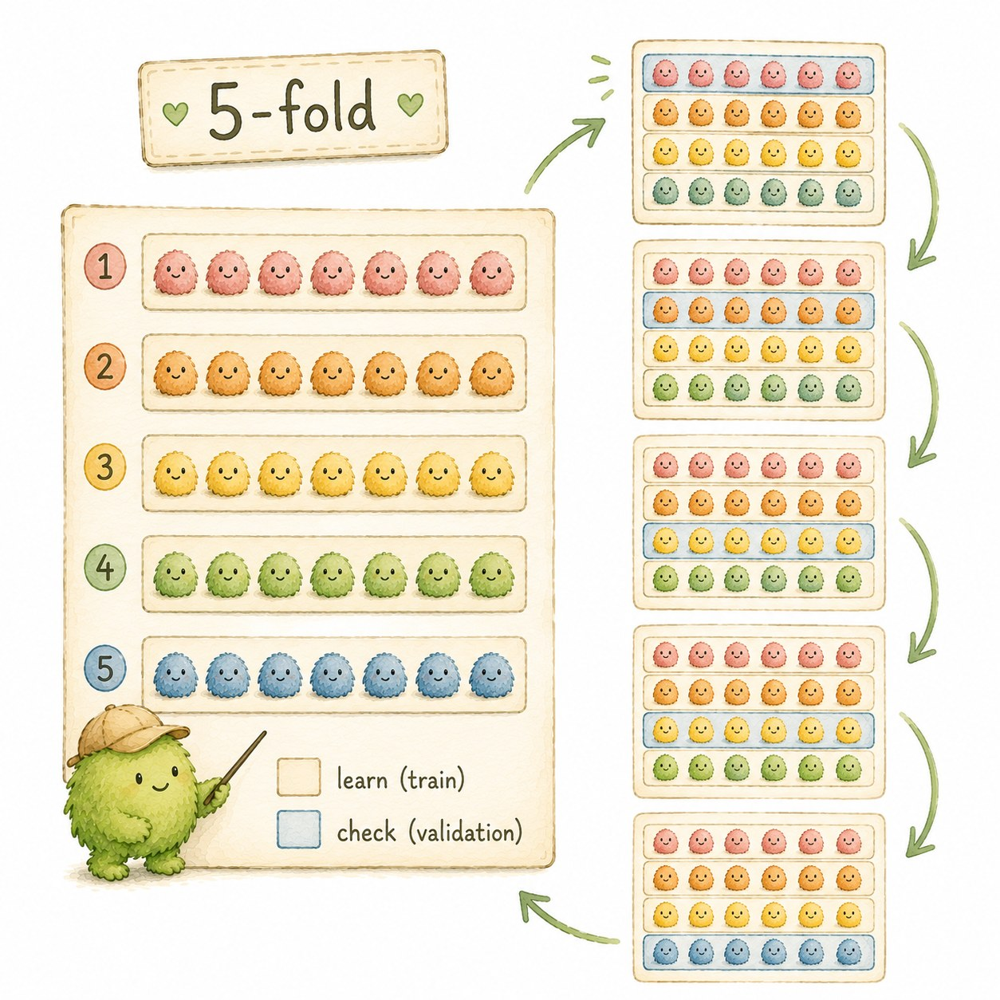
5-fold CV — illustration generated with Images2.0
Two metrics — and why a single split lies
Why two. With a ~32%-event outcome, “always predict survived” is ~68% accurate and clinically useless. We watch two complementary numbers:
- AUC-ROC — ranking of risk across all thresholds; prevalence-free, chance \(= 0.5\).
- AUC-PR — performance on the positive (death) class; its no-skill baseline is the prevalence (\(\approx 0.32\)), so it stays meaningful when the event is rare.
Why cross-validate. A single ~75-patient test split is high-variance: by luck it can flatter a weak model — even make a plain glm look unbeatable — while 5-fold CV, which averages over five held-out slices, gives the honest comparison. Across the zoo the random forest typically leads on CV while the linear models trail; the test set then confirms the finalized winner once.
Numbers are read live. Exact AUCs depend on the seed and the run, so we read them from the live execution, not from the slide. What is stable is the pattern: cross-validation is the honest ranking, and one number on a small cohort is luck.
Aside (no numbers needed). AUC-ROC is symmetric — the positive class doesn’t change it. AUC-PR is not: it depends on the positive class, which is exactly why we put died first, so both metrics score death by default. Moving the decision threshold by a clinical false-negative / false-positive cost ratio is a deliberate Advanced topic; here we stop at threshold-free ranking.
Step 05 · Reproducible report
Objectives. Ship the deliverable — reproducible because it runs the analysis.
- The report
.qmdruns the whole pipeline in one render — split \(\to\) recipe \(\to\) tune \(\to\) finalize \(\to\)last_fit\(\to\) tables & curves — so every number is produced by the same run that prints it. Nothing cached by hand, nothing to drift. - Close with
renv::snapshot(): pinned env +here+set.seed= a colleague re-runs it and gets the same report.
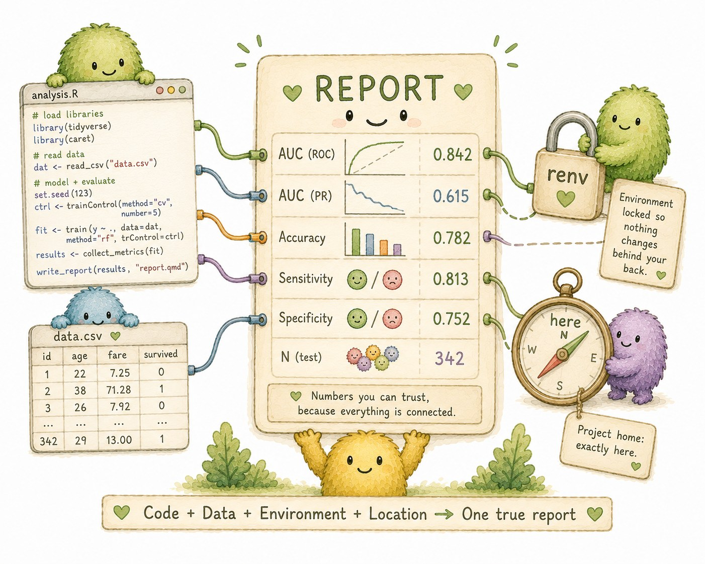
Code + data + environment + location → one true report — illustration generated with Images2.0 (numbers illustrative)Why “one render” is reproducibility
A report whose numbers are typed in — or reloaded from a stale cache — can silently disagree with the analysis. A .qmd that executes the analysis as it renders guarantees the figures and the code that made them are the same object. That is the whole point of a literate, executable document.
renvpins the packages,herethe paths,set.seedthe randomness \(\to\) same inputs, same output, on any machine.- What about speed and big analyses? At N=299 a full tune is seconds. When an analysis gets heavy you don’t hand-cache
.rdsfiles — you reach for a pipeline (targets, the Advanced capstone) that caches and stays reproducible: inspectable intermediate targets, each re-derivable and hash-checked, all converging into the report the pipeline compiles itself.
Concept map — the whole afternoon
%%{init: {'themeVariables': {'fontSize': '22px'}, 'flowchart': {'nodeSpacing': 36, 'rankSpacing': 46, 'padding': 12}}}%%
flowchart TD
PROJ["Reproducible project<br/>(renv + here + rio)"]
IMPORT["Import & tidy data<br/>(rio + janitor +<br/>dplyr/tidyr)"]
LEAK["Data leakage<br/>(drop<br/>follow-up time)"]
EDA["Clinical EDA<br/>(tbl_summary<br/>+ ggplot)"]
OUT["Binary clinical<br/>outcome<br/>(died / survived)"]
SPLIT["Train/test split<br/>(rsample)"]
RECIPE["Recipe /<br/>preprocessing<br/>(recipes)"]
MODEL["Model spec<br/>(parsnip)"]
ENGINE["Engine-swap idiom<br/>(one line =<br/>new algorithm)"]
WF["Workflow<br/>(recipe + model)"]
METRIC["Metrics:<br/>AUC-ROC + AUC-PR<br/>(yardstick)"]
GLM["Plain glm baseline"]
ALGOS["The four algorithms<br/>(pen-logistic, kNN,<br/>SVM, RF)"]
PARAM["Hyperparameters<br/>(penalty, neighbors,<br/>cost, mtry...)"]
BV["Bias-variance /<br/>overfitting"]
CV["Cross-validation<br/>(vfold_cv v=5)"]
OPT["Optimism gap<br/>(single split lies)"]
WFSET["workflow_set +<br/>workflow_map<br/>(tune all at once)"]
TUNE["tune_grid<br/>(tiny grids, parallel)"]
COMPARE["rank_results /<br/>autoplot"]
BEST["select_best<br/>+ finalize"]
LASTFIT["last_fit on test set<br/>(honest estimate)"]
REPORT["Rendered Quarto<br/>report (runs full<br/>analysis) + renv::snapshot"]
PROJ -->|enables| IMPORT
IMPORT -->|guards-against| LEAK
IMPORT -->|feeds| EDA
EDA -->|describes| OUT
LEAK -->|would-corrupt| OUT
PROJ -->|underpins| REPORT
IMPORT -->|required-by| SPLIT
SPLIT -->|produces-train-for| RECIPE
RECIPE -->|combined-in| WF
MODEL -->|combined-in| WF
ENGINE -->|is-a-setting-of| MODEL
WF -->|scored-by| METRIC
GLM -->|is-baseline-for| ALGOS
GLM -->|same-task-as| MODEL
ALGOS -->|are-instances-of| MODEL
PARAM -->|tunes| ALGOS
PARAM -->|controls| BV
BV -->|motivates| CV
OPT -->|motivates| CV
SPLIT -->|single-split-causes| OPT
CV -->|estimates| METRIC
ALGOS -->|bundled-in| WFSET
WFSET -->|tuned-by| TUNE
TUNE -->|resamples-over| CV
TUNE -->|compared-with| COMPARE
COMPARE -->|leads-to| BEST
BEST -->|finalized-then| LASTFIT
LASTFIT -->|closes| OPT
METRIC -->|reported-in| REPORT
LASTFIT -->|reported-in| REPORT
Next: open the model — Advanced
You built and validated a model. Advanced opens this very model:
- Interpret it — permutation VIMP and SHAP, with the logistic as a sanity anchor.
- Go beyond — deep learning (
torch/luz/brulee), andellmeras a typed, reproducible LLM-as-ETL.
The validated final_fit you just produced is exactly what Advanced reloads on day one.
Further reading — go deeper in R
tidymodels & the tidyverse (free, online)
- Kuhn & Silge. Tidy Modeling with R —
tmwr.org. The canonical book for the spine we used (rsample\(\to\)recipes\(\to\)parsnip\(\to\)workflows\(\to\)yardstick). - Wickham, Çetinkaya-Rundel, Grolemund. R for Data Science (2e) —
r4ds.hadley.nz. tidyverse foundations and the native pipe.
Concepts behind the build (free PDF)
- James, Witten, Hastie, Tibshirani. An Introduction to Statistical Learning (R) — the overview’s theory, in R.
Reproducibility & the next step
renv·here·set.seed— the three pillars we leaned on all afternoon.targets— Will Landau’s pipeline toolkit; the backbone of the Advanced workshop.- Kuhn & Johnson. Feature Engineering and Selection —
bookdown.org/max/FES. Deeper onrecipes.
Thank you for the attention!

unipd-ubep.it · Corrado.Lanera@ubep.unipd.it
GitHub @CorradoLanera · Telegram @CorradoLanera · GitHub @UBESP-DCTV
Practical Artificial Intelligence for Medical Data Analyses with R — Basic